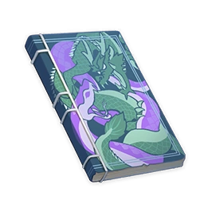

The Byakuyakoku Collection¶
Vol. 1 - The Serpent and Drakes of Tokoyokoku¶

Note
A novel based on Watatsumi Island's folktales. The original edition of this text was transcribed on Watatsumi Island and brought back to Narukami Island by a merchant while the former's serpent god yet lived. No one reads this ancient tome nowadays, its role supplanted by all the light novels on the market. This book describes the unique cosmological outlook of the Watatsumi people before they came to adopt aspects of Narukami culture, and a recent resurgence in traditional novel publishing has allowed it to see the light of day once more.
Mysteries creation conceals, the sun and moon omens reveal.
Three corners in darkness shrouded, the void by five saints clouded.
"The universe has no beginning and no end, and so it was with the land that once was. But this matters not to us, for the land that bears us no longer has anything to do with that eternity without start or ceasing."
— So said the lone sage, Aberaku, to the first Sunchild. The Sunchild had long intended to punish Aberaku. Summoning the sage before the throne in this manner was but an additional way of making things difficult for him before detaining him.
Legend has it that Aberaku was opened up to wisdom by Tokoyo Ookami, and was thus able to bring light to Enkanomiya, which had till then never seen the sun. But the Sunchild grew jealous of his talents, thus imprisoning him for life. Yet these children of the sun never considered that had Aberaku not created that underground star, they never would have existed in the first place.
"The origin of heaven and earth is like the chicken and egg, and are not dragons and snakes kin?" No sooner had the sage Aberaku uttered these words than he was overthrown by troops lying in ambush.
At that time, Enkanomiya had only just been bought some room to breathe by the appearance of the sun. The Dragonheirs loved the dark and shunned the light, and thus could no longer act with impunity. The days when the Dragonheirs would rampage and graze upon humanity like so much grass had, at last, come to an end, for the people of Enkanomiya finally had the means to resist.
Yet it came to pass that the flaws in human nature would rear their ugly heads even before such outside threats could be quelled. The people chose a Sunchild, crowned him king, and worshiped him, and yet he ruled with a brutal hand, framing the righteous.
Unnumbered years would pass before a young child of Enkanomiya would make a wager with his peers. Alone, he would dive beyond the three corners, evading the trail of the Dragonheirs, in search of a Dragonbone Flower. But what he found instead within a great cavern was a mighty serpent, one he had never seen before. Somehow, as he gazed upon the serpent's titanic form, the child felt no fear, but instead a kind of kinship.
"I am the Profane Serpent. Though my servants are numberless, not one mortal now dwells in my shadow. That I have fallen into this realm, and that we should meet... Perhaps this is fate. You are not one of my people, but you are human nonetheless. Speak your desire, and I shall hear it."
"Could you then, perchance, become our god?"
Thus did they, human and serpent, go forth to face the royal authority of the Sunchild and the incursions of the Dragonheirs beyond — thus was the curtain raised on the turning of the tide.
Vol. 2 - Before Sun and Moon¶
Note
A chronicle that ordinary folk have been forbidden to read. The writing is a mix of fables and histories from the beginning of the world to the creation of the Dainichi Mikoshi.
What we wish to record is the tale of how heaven's will took shape on the earth below. O heavenly gods, these creations are your works. Grant us divine wisdom — let us endlessly record!
"When the Doves Held Branches"
When the eternal throne of the heavens came, the world was made anew. Then the true lord, the Primordial One, came forth and did battle against the seven terrifying sovereigns, dragon-lords of the old world. The Primordial One created shining shades of itself, and the number of these shades was four.
"On Phanes, or The Primordial One"
The Primordial One may have been Phanes. It had wings and a crown, and was birthed from an egg, androgynous in nature. But for the world to be created, the egg's shell had to be broken. However, Phanes, the Primordial One, used the eggshell to separate the "universe" and the "microcosm of the world."
"Forty Years After the Held Branches"
Forty winters entombed the flames, and forty summers churned the seas. The Seven Sovereigns were vanquished, and the seven nations submitted to the heavens. The Primordial One, the great sovereign, began the creation of heaven and earth for "our" sake — that of its creations which it cherished most, who would soon appear upon this earth.
...
"Four Hundred Years After the Held Branches"
The mountains and rivers were made, and the seas and oceans accepted those who rebelled and those who would not kneel. The Primordial One and one of its shades created the birds of the air, the beasts of the earth, and the fish of the sea. Together, they also created flowers, grass, and trees, before finally creating humans — our ancestors, numerous as the stars in the sky, uncountable as the sand on the shore. From that time, our ancestors made a covenant with the Primordial One, and so entered into a new age.
"The Year of the Ark's Opening"
The Primordial One had a sacred plan for humans. As long as they were happy, it too rejoiced.
"The Year After the Ark's Opening"
The people worked the land, and so came the first harvest. The people mined, and so reaped the first crop of precious ore. The people gathered, and the first poems were written.
"The Year of Jubilee"
If there was hunger, the heavens would bring down food and rain. If there was poverty, the earth would bring forth its riches. If melancholy were to spread, the heavens would reply with their voices. The one taboo was to succumb to temptation. But the path to temptation had already been sealed.
...
"The Funerary Year"
The second throne of the heavens came, and war was rekindled, as it was in the world's creation. That day, the heavens collapsed and the earth was rent asunder. Our ancestors and their ancestral land fell into this place during that conflict.
The era of darkness had begun.
"The First Year of Darkness"
The people of the Seven Sovereigns had found refuge in the oceans, and the Dragonheirs of the Depths ruled this particular place, which led to war between them and our ancestors.
Our ancestors chased them into the shadows with the light of a thousand lanterns, and they hid in those shadows, hunting us. But there was only darkness in this place, and so their hunting grounds were untrammeled.
The prayers of the people turned into lamentations, but the Primordial One and its three other shining shades could not hear.
"The Parable of the Sun"
In a dark cavern, there lived a group of people who had never seen the light. Among them was a sage who had once seen the sun, and he told the gathered folk about what life under the sun was like, and about the great might of the sun. Seeing that they did not comprehend, he lit a torch — and thus did people come to worship the flame, believing it to be the sun. They even got used to a life of darkness and fire.
When the sage died, someone would monopolize the flame. Using it, they would cast a long shadow over the land.
"The Parable of the Lethied Lotus"
A lotus that causes all who look upon it to forget their troubles. A ship captain searching for the way back to the surface discovered a tribe of people who ate these lotuses. Some crew members stayed in that place. Others rejected that temptation.
Life is a boundless ocean of suffering. We are only searching for the way home.
"The Third Year of Darkness"
We knew the only one who had not forsaken us as the "Ruler of Time." She was the moment. She was every moment. She was the measure of a thousand winds and the sun and the moon. She was every second of joy, every moment of rage, every instant of longing, every minute of obsession. She was every flash of delirium.
We call her Kairos, or "the ruler of the unchanging world." We dare not speak her true, secret name, and so I pen it here, only once, and in reverse: "Htoratsi."
"The Year of Blindness"
The sage Abrax's wisdom was awakened, and he unveiled a light-bringing miracle from within his hands. So our ancestors began to build the Helios, with him as their leader.
"The Year of Sight, or the First Year of Sun and Moon"
Helios, the divine chariot of the sun, was finally completed. The Whitenight came, and Evernight was banished.
The years of the Sun and Moon had begun.
"The Second Year of Sun and Moon"
Our ancestors sought the returning way, for surely the war on the surface had ended by then.
But the Primordial One, the first throne, had laid down a ban, preventing our ancestors from finding the path home.
In that case, the Primordial One must have defeated the Second Who Came.
Abrax was imprisoned by order of the Sunchild.
"The Parable of the Tree"
The king's gardener and the tree spirit of the royal garden were in love. But the king wished to repair the beams of his pavilion, and so needed to cut down the tree with the most spiritual energy within it. The king was the incarnation of the Primordial One, and the gardener could not defy the sovereign of sovereigns, and so he could only bring his plea to the king's priest, who was the incarnation of Tokoyo Ookami.
The priest had pity on the gardener and said to him: "Go, and cut the branches of the spirit-tree down." The gardener did so, and afterward did as the king ordered, cutting the spirit-tree itself down.
Then the priest said: "Plant the spirit-tree's branches in the ground." But the gardener said: "A spirit-tree shall take five hundred years to grow." The priest said: "Your one thought shall echo through eternity." And so the gardener planted the branches in his back yard. In an instant, the slim branches grow into a new tree, and the new tree spirit was a continuation of the past one.
For it is the God of Moments who is able to take "seeds" from this "moment" into the past and the future.
The Tenth Year of Sun and Moon
Abrax is long gone. The events before the sun and the moon have been recorded sufficiently. Well, if I did not dare to write things down just as they happened, how could I consider myself a scribe of Tokoyo Ookami?
Hark, I hear armor without. Here, I shall stop writing.
Vol. 3 - Hydrological Studies in Byakuyakoku¶
Note
This text records the geography and hydrology of Byakuyakoku. With the sealing of the depths and the emigration of the people of Watatsumi, as well as the passing of long years, this book is now useless.
The lands beneath the aphotic depths are vastly different from those on the surface, to the extent that all surface-derived common sense must be abandoned down below. All we formerly knew of land and sea was given unto us directly by the heavens. In this new world of ours, we must begin groping even for the simplest methodologies anew.
O you who come after and read these words, do not take the life you lead for normalcy. Even if after a hundred or a thousand years, people should grow used to life down here, always remember — these days with neither sun nor moon are abnormal. Even if some sage were to draw us the sun, there will surely be filthy wretches who will borrow its light to cast long shadows over us.
This book is intended to help people understand the world they live in, and to never forget our desire to return to the light.
(This book has been constantly edited, redacted, and modified over the years. Even the name of the book's title has seen change from "Aphotic Earth" to "Tokoyokoku," before becoming "Byakuyakoku." Later, due to the grace of Watatsumi, the people of the depths would return to the sea's surface. But it seems like "Aphotic Earth" has some special meaning, and it has not been universally changed throughout the text.)
Of Wind and Water
Byakuyakoku has no mountains to speak of, and so it is pointless to speak of them.
However, our priests and sages have detected something. Even in these depths, the power of the "undying wind" and the "water" still remain. The personification of the "undying wind" is known as "Tokoyo Ookami," and is poetically rendered "the thousand winds" or "the thousand winds of time." "Water," on the other hand, is the might of the Vishap Realm, represented by the Bathysmal Vishaps.
We have already developed a certain field of study regarding the relationship between Sunfire, wind, and water. As such, both hydrology and the undying wind must be considered before undertaking any project of civil engineering.
The Borders of Byakuyakoku
The borders of Byakuyakoku are marked out by three corners. These mark the limits of the see-saw clash between humanity and the vishaps. During the era of Byakuyakoku, Towers of the Three Realms were built at these three corners, used to harmonize the three realms. Their ancient names have been lost to time, and they were renamed after the coming of Watatsumi.
These towers are exceedingly important, and they are not in locations aligned with either wind or water. Rather, their purpose is to stabilize the tendencies of Byakuyakoku and control its winds and waters.
If these towers were to be imperiled, so would the entire nation. As such, they have been hidden using secret arts. Only the shrine maidens and the Vassals of Watatsumi can summon them forth.
The Narrows
The Narrows were, in the earliest times, sandwiched between the mountain face and an area known as the Roundlands, thus earning that location its name. However, the exceedingly strange tectonic shifts in Byakuyakoku caused the Roundlands to collapse into the depths, thus causing The Narrows to widen significantly.
The Serpent's Heart
From the first time our ancestors discovered this place, it had already played host to a unique phenomenon in which space itself might overlap in a certain locale. Later, those who came before us would utilize this phenomenon by creating the Serpent's Heart. It would be used to guard secrets, imprison criminals, and worship the great imaginary serpent, Ouroboros.
In the earliest times, this place was called Delphi, the land of snakes. This name did not change even after the arrival of Watatsumi Omikami. Ancient art depicts the scaleless serpent as "Ouroboros," and the coral-adorned serpent as "Orobashi."
Dainichi Mikoshi
The earliest name of this place was "Helios," and it was the high tower built by the sage Aberaku, standing for earth, the element between wind and water.
According to prophecy, this was likely the sun that the sage displayed, used to light those lightless caverns. And just as those prophecies suggested, it was also later used to cast a great shadow over the nation.
Vol. 4 - Bathysmal Vishap Experimental Records¶
Note
Experimental Records of the Bathysmal Vishaps. No vishaps were killed in the writing of these records.
...Effective today, all experiments regarding the Dragonheirs will be directed by Watatsumi Omikami in person. All files preceding the founding year of the Watatsumi calendar have been destroyed. Dossier serial numbers shall no longer use the categories Alpha, Beta, Gamma, Delta, and Epsilon, which used the ancient Watatsumi tongue. Instead, we shall use Earth, Water, Fire, Wind, Ether, and Void going forward. All quotes and notations are to be written within quotation marks (""). The following order of writing should be observed: File Header-Serial Number-Subject-Author. Author can be omitted, or their internal title within the research lab may be used. Usage of a researcher's ancient Byakuyakoku/Enkanomiya name or modern Watatsumi/Narukami/Inazuman name is forbidden.
These experimental records are not to be used for the writing of diaries, love letters, or fantasy novels.
...
The Dragonheirs' (hereafter named Bathysmal Vishaps or plain vishaps) evolution is plain for all to see. ("Water-101-Dragonheir Evolution: I")
We have tried lowering the temperature in the living environs of a young heat-resistant vishap. As a result, they were weaker once matured. We suspect that this is because its body did not possess the "seed" required to resist such an environment. However, its descendants would all possess high body fat, greater predilection towards sleep, and would express the Cryo element. (Please refer to the experimental data after the main text. The abnormal data derived from Sample 3 is due to my assistant feeling sorry for the subject of the anti-hunger control group and feeding it surreptitiously.)
When we then placed their descendants into sweltering conditions, they would again choose, like their ancestors, the heat resistance trait. However, none of them have developed traits indicative of the Pyro element thus far.
We do not have enough data to reach a conclusion at present, but we can make an educated guess that Bathysmal Vishaps have the ability to awaken their "seed" freely before maturation. Vishap mothers can also create new "seeds" to pass on to their descendants should they encounter heretofore unseen, challenging environments.
It can be said that even before encountering us, the people of Enkanomiya, the Bathysmal Vishaps had already stored a veritable armory within their bodies.
...
The results of the intelligence tests are astonishing. ("Void-207-Vishap Intelligence Research"). Through a screening process consisting of rewards and punishments (although previous research indicates that screening is unnecessary — vishaps are, one and all, adapters par excellence), the linguistic capacities of vishaps four generations down are starting to approach that of a 12-year-old human student. Perhaps it might be more accurate to say that vishaps always had their own methods of communication, and what they are displaying here is their ability to learn.
We believe that these experiments should be stopped. If not, we may yet be proven narrow-minded for having dismissed that last person who wrote a fantastical tale about vishap-people.
Prophecy holds that the Dragon Sovereign of Water will be born in a human form. We must not let this thing happen in Enkanomiya.
...
All previous attempts at grafting have failed. ("Void-907-Watatsumi Omikami's Special Orders: I"). Because they cannot accept Watatsumi Omikami's blood, the vishaps will fall victim to various adverse effects. Perhaps they are not yet strong enough, but we cannot be sure — indeed, according to our rationalized vishap evolutionary roadmap, we should have already bred the strongest vishap possible.
...
The grafting can be considered a success. ("Void-907-Watatsumi Omikami's Special Orders: III"). The rejection originates from the vishaps having been beings of the Light Realm (also known as elemental creatures), and thus being at odds with the Human Realm, of which Omikami and its coral vassals are a part.
All experimental logs are closed. No experiment conducted here resulted in the death of any Dragonheirs — they all lived to see the end of their days. Praise be to Watatsumi Omikami, gracious and beneficent.
Vol. 5 - In the Light, Beneath the Shadow¶
Note
A puzzle book for children of ages nine to twelve. As a book from a transitory period, it uses Narukami-style names with Byakuyakoku subscripts.
Question 1: What walks on four feet in the early morning, two feet during the day, and three feet at night?
Answer: A vishap who transforms into a person to attend a ball, then breaks one of its legs and eventually ends up walking with a cane.
Sages like this answer the most, and it is the children get it right almost exclusively. For adults, it always smells like a horrible conspiracy when a vishap turns into a human. According to a prophecy of old, the Dragon of Water, the ancient lord of vishaps, will definitely descend in the form of a human. However, for children, the answer to the question indicates the possibility of mutual understanding.
But it is not a good idea to make vishaps sound adorable. Though such jokes defang the fear, they also lower the guard of the children.
(Dragonheirs of the Depths have evolved to wield the power of other elements and have hence lost their purity. As such, the Dragon of Water will no longer be born from among their ranks.)
Question 2: With only one mouth, this being sometimes has four feet, sometimes, two feet, and sometimes, three feet. Though unable to morph into other things, it is able to walk on the earth, swim in the water, and fly in the sky. The more feet it walks on, the feebler it grows. What is this being? Answer: A human.
Humans crawl on hands and feet as babies, walk on two legs as adults, and use a cane as elders. The answer is undoubtedly "a human."
Question 3: What talks with only one mouth but walks on four and two feet?
Answer: Someone raising livestock.
This riddle is a very ancient one. In the past, we could only understand the meaning of livestock from reading texts. "Four legs" refers to four-legged animals like the Aux, Hors, and Foreste Bore. After Byakuyakoku fell into the ocean depths, these animals died out within two generations due to a lack of habitable land and food.
Since the arrival of Watatsumi Omikami, some of us have returned to the sea's surface to build a home and interact with the people there. Therefore, we have been able to review the names of these animals. According to the Vassal and the Omikami's prophecy, we shall all move back to the sea's surface someday, so it is important to get these names right. Aux means cattle, Hors means horse, and Foreste Bore means forest boar.
Question 4: Who are the two sisters who give birth to each other every day?
Answer: Day and night, or Whitenight and Evernight.
This riddle is easy to understand. It alludes to the succession of day and night, which in Byakuyakoku means the cyclical Whitenight and Evernight under the control of the Dainichi Mikoshi. Though the land was in everlasting night before the Dainichi Mikoshi was built, the light of day that people had seen has remained unchanged.
By the way, the two special astronomical phenomena of Byakuyakoku — the mirages and the Sinshades — were at first indiscriminately referred to as Eidolons and seen as the two sides of the same coin. It was not until the arrival of Watatsumi Omikami that the people of Byakuyakoku were able to understand the two phenomena and name them differently. Though the sun did not shine upon Byakuyakoku, the mirages that appeared in Whitenights were named Sunfire Phantasms and those of Evernight, Ghostfire Phantasms. As time went by, both of them came to be referred to as Sunfire Phantasms, for they are essentially the same thing.
Question 5: I am the Shadowborn of the Lord of Light. I am a wingless bird that rises from the earth to the sky. Those who shed tears in my presence feel no sorrow in their bosoms. Away with a gentle breeze I fade, and thus ends my fleeting life.
Answer: The answer is smoke. Birds are winged creatures, and it is normal that they are not seen in Enkanomiya.
Question 6: A father has twelve children, each then giving birth to sixty daughters of different appearances. Of them, thirty are pale and thirty are dark. The whole family, knowing not death, will only fade away. Who is the father?
Answer: The answer is the year. The people of Byakuyakoku may find the part about sixty pale or dark granddaughters a bit confusing. But everything will start to make sense once they crack Question 4.
There used to be a sequel to this riddle in ancient times. It roughly said that every granddaughter would give birth to twelve descendants, and each of them would then have sixty children. Every such child later would give birth to another sixty, who would go on to have children of their own. This would continue until at last, all the offspring would together give birth to the one and only primordial child — Tokoyo Ookami, the "mother" of fourteen billion years.
Watatsumi Omikami forbade people from spreading this riddle.
...
Appendix: Historical Figures, Their Traditional Names, and Narukami-Style Renderings
Kairos — Tokoyo Ookami
...Eris — Arisu
Abrax — Aberaku
Charon — Ka...
Spartacus — Supada
Emma — Ema
... - Koi
Antigone, Antigonus — Antei
...
...
Erebos — Eboshi
Echion — Eki
Udaeus — Uda
Asclepius — Surepio
...